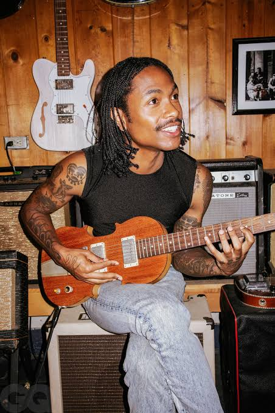

Steve Lacy, la nonchalance comme signature
Un gamin, une basse, et quelques morceaux enregistrés sur un téléphone — c'est tout ce qu'il a fallu pour poser un son. Steve Lacy a fait de la décontraction un art, et prouvé qu'on pouvait révolutionner une esthétique depuis sa chambre, sans studio ni budget.

Le home-studio comme manifeste
Avant les gros studios, il y a eu une chambre et une application. Lacy a construit son monde avec presque rien, prouvant qu'une idée vaut mieux qu'un budget. Il a montré à toute une génération qu'on pouvait faire un tube depuis son lit. Pas d'excuse, juste du goût.
Cette approche bricolée n'est pas une limite, c'est une esthétique. Le grain, la simplicité, l'impression qu'on surprend un moment privé : tout ça donne à sa musique une intimité que les grosses productions n'atteignent jamais. On a l'impression d'écouter un ami jouer dans la pièce d'à côté.
Et c'est peut-être là sa plus grande influence. En montrant qu'on pouvait se passer de l'industrie pour créer quelque chose de grand, il a ouvert une porte à des milliers de jeunes qui n'avaient qu'un ordinateur et une idée. Il a rendu la création à nouveau accessible, presque banale, au bon sens du terme.
Le groove avant tout
Chez Lacy, c'est la basse qui parle. Funk, soul, pop se croisent dans des morceaux qui ont l'air improvisés et qui sont pourtant d'une précision folle. Sa nonchalance est un déguisement : derrière, il y a un vrai musicien.
Car il ne faut pas s'y tromper : ce qui semble jeté là, avec légèreté, demande une oreille rare. Choisir le bon accord, le bon silence, le bon défaut, c'est un travail d'orfèvre déguisé en paresse. Lacy a cette élégance des gens doués qui ont l'air de ne pas forcer.
Pourquoi ça marche
Parce qu'il incarne une liberté que tout le monde envie : celle de faire exactement ce qu'on veut, comme on veut. Pas de formule, pas de calcul, juste l'envie du moment. Dans une industrie obsédée par la stratégie, il rappelle que le plaisir est encore la meilleure des méthodes.
Et quand le succès explose — un refrain qui devient viral, des stades qui chantent ses mots — il garde la même désinvolture. Comme si rien de tout ça ne devait jamais changer la raison d'être là : le son, et rien d'autre. Cette constance est devenue, paradoxalement, sa marque de fabrique.
Il y a aussi quelque chose de profondément générationnel dans son succès. Lacy parle à une jeunesse qui refuse de choisir entre les genres, les influences, les étiquettes. Il est un condensé d'une époque qui ne veut plus rentrer dans les cases, qui mélange tout et en fait une force.
Une génération qui se reconnaît
Lacy, c'est le reflet d'une jeunesse qui crée depuis sa chambre, qui mélange tout sans complexe, qui refuse les cases. Il ne ressemble à personne parce qu'il n'a jamais essayé de ressembler à quelqu'un.
Ses fans ne l'admirent pas de loin, ils s'identifient. Ils voient en lui la preuve qu'on peut partir de rien, rester soi, et quand même toucher le monde entier. C'est une promesse autant qu'une musique : celle que l'authenticité peut encore gagner.
L'art de ne pas forcer
À l'heure où tout le monde crie pour exister, Lacy chuchote, et on l'entend quand même. Sa force, c'est de ne jamais courir après l'attention : il la laisse venir. Dans un paysage saturé de bruit et de surenchère, cette retenue est presque révolutionnaire.
Il a compris que le vrai style, ce n'est pas d'en faire plus — c'est d'oser en faire moins. Et c'est peut-être la leçon la plus précieuse qu'il laisse à ceux qui le regardent : la décontraction, quand elle est sincère, vaut tous les efforts du monde. Lacy n'a pas cherché le son parfait, il a cherché le sien. Et c'est précisément pour ça qu'on le reconnaît entre mille.
Lacy n'a pas cherché le son parfait, il a cherché le sien. Et c'est précisément pour ça qu'on le reconnaît.